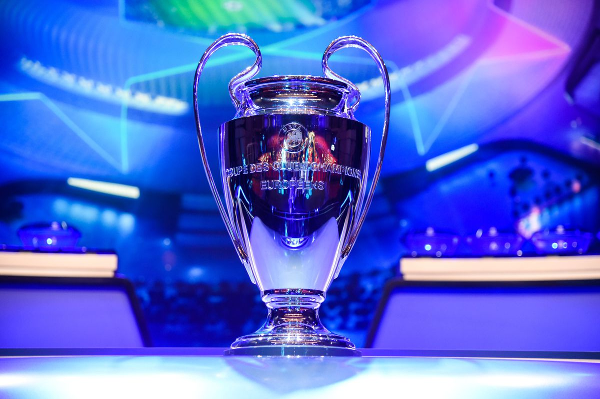
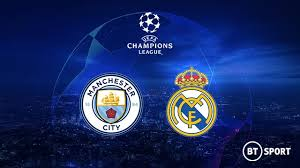
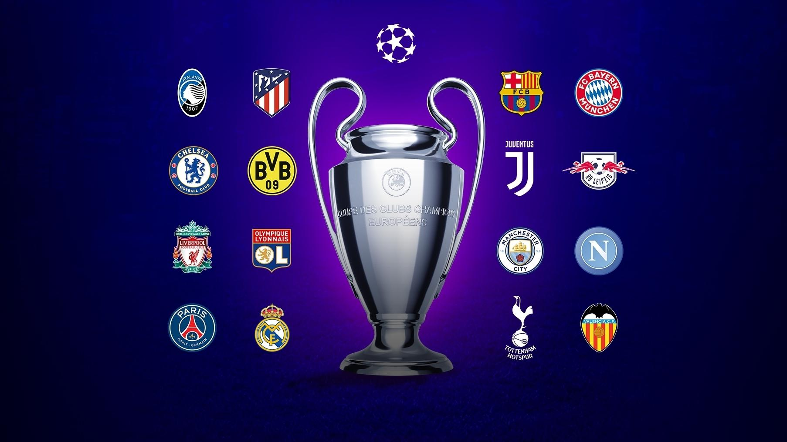

and "European Cup" redirect here. For the table tennis competition, see European Champions League (table tennis). For the trophy, see European Champion Clubs' Cup. For other uses, see European Cup (disambiguation).
This article is about the men's competition. For the women's competition, see UEFA Women's Champions League.
UEFA Champions League
UEFA Champions League logo 2.svg
Founded 1955; 65 years ago
(rebranded in 1992)
Region Europe (UEFA)
Number of teams 32 (group stage)
79 (total)
Qualifier for UEFA Super Cup
FIFA Club World Cup
Related competitions UEFA Europa League
(2nd tier)
UEFA Europa Conference League
(planned 3rd tier)
Current champions England Liverpool (6th title)
Most successful club(s) Spain Real Madrid (13 titles)
Television broadcasters List of broadcasters
Website uefa.com
2019–20 UEFA Champions League
The UEFA Champions League (also known as the European Cup) is an annual club football competition organised by the Union of European Football Associations (UEFA) and contested by top-division European clubs, deciding the competition winners. It is one of the most prestigious football tournaments in the world and the most prestigious club competition in European football, played by the national league champions (and, for some nations, one or more runners-up) of their national associations.
Introduced in 1955 as the European Champion Clubs' Cup, it was initially a straight knockout tournament open only to the champion club of each national championship. The competition took on its current name in 1992, adding a round-robin group stage and allowing multiple entrants from certain countries.[1] It has since been expanded, and while most of Europe's national leagues can still only enter their champion, the strongest leagues now provide up to four teams.[2][3] Clubs that finish next-in-line in their national league, having not qualified for the Champions League, are eligible for the second-tier UEFA Europa League competition, and from 2021, teams not eligible for the UEFA Europa League will qualify for a new third-tier competition called the UEFA Europa Conference League.[4]
In its present format, the Champions League begins in late June with a preliminary round, three qualifying rounds and a play-off round, all played over two legs. The six surviving teams enter the group stage, joining 26 teams qualified in advance. The 32 teams are drawn into eight groups of four teams and play each other in a double round-robin system. The eight group winners and eight runners-up proceed to the knockout phase that culminates with the final match in late May or early June.[5] The winner of the Champions League qualifies for the following year's Champions League, the UEFA Super Cup and the FIFA Club World Cup.[6][7] In 2020, the traditional schedule for UEFA matches was disrupted. Those scheduled for May 2020 were postponed due to the coronavirus outbreak, leaving some finals unconcluded.[8]



Now Let's Play a game to know the winner of the next champion of this league and to know the winner just click to the button